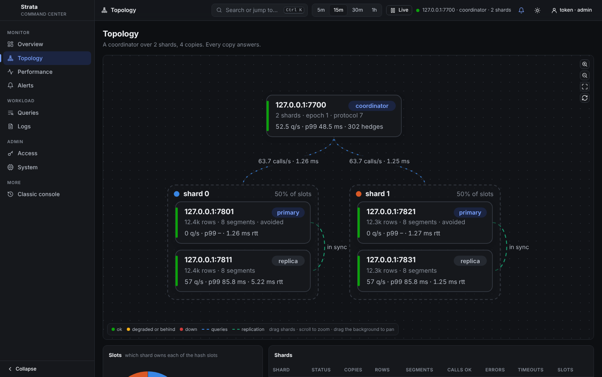

One engine for the database, the search and the ranking
Each table is indexed four ways at once over the same rows: posting lists for full text, a columnar forward index for structured fields, vector indexes, and graph edges. A cost-based planner chooses, per segment and from exact statistics, how to run each part of a statement.
Full text
posting lists, BM25BM25 and boolean queries
shippedMATCH takes AND, OR, NOT, phrases and groups; bm25() scores. MaxScore and Block-Max WAND skip what cannot reach the top k.
Weighted, required and excluded words
shippedWord weights, required and excluded words, "x of y" word groups, and AT_LEAST(n, …) over any conditions.
Typos and synonyms
shippedvacine~ finds words within an edit or two; synonym sets expand a query with synonyms => 1.
Autocomplete that tolerates typos
shippedPREFIX(kw, :typed, fuzzy => 'auto') walks the sorted dictionary as a trie, so its cost follows the values near what was typed.
Posting lists from our own study
shippedLoom and BP128 posting lists. Loom is the size of partitioned Elias-Fano, with 2.4–3.0× faster AND and 3.8–7.7× faster OR.
Posting listsAnalyzers by name and version
shippedenglish stems and drops stopwords, simple keeps every word. A field records its analyzer, so a version that analyses differently refuses it rather than misread it.
Columns and JSON
forward index, zone mapsTyped columns
shippedKEYWORD, INT, FLOAT, BOOL, TIMESTAMP and lists, with NOT NULL, DEFAULT and REFERENCES.
Ranges, filters and facets
shippedRange scans over histograms and zone maps, and GROUP BY over any result for facet counts.
JSON fields
shippedKeys nobody declared, indexed by path: attrs.voltage >= 5, grouped and sorted; json_paths() lists every path with its counts and types.
Full text inside JSON
in progressText values of a JSON field searched with MATCH, and often-used paths promoted to real columns.
Change columns while serving
shippedALTER TABLE adds, drops and renames columns of tables that hold rows, on one database, its replicas and a cluster.
Clustered, sharded, retained
shippedcluster_by keeps a user's rows together, shard_by places them on one shard, and retain = '400 days' drops old rows at merge.
Vectors
HNSW, IVF, 8-bit codesHNSW, IVF or exact
shippedfloat32, 8-bit or binary codes. HNSW graphs build on 8-bit codes, and merges join their inputs' graphs instead of starting over.
Vector indexesFiltered search, planned
shippedPer segment, from exact counts: an exact scan of the matches, the filter inside the HNSW walk, or a post-filter that widens the walk. 1.8–6.1× faster than the best fixed strategy.
The plannerHybrid fusion
shippedrrf(), and minmax(), tmm() or zscore() in a weighted sum, over BM25, vectors, graphs and columns, under the same filter as their inputs.
Multi-vector MaxSim
shippedVECTOR(d)[] fields scored by late interaction, as ColBERT and ColPali score them, with token pooling by Ward's linkage.
MUVERA candidates
in progressFixed-dimension encodings of multi-vector rows, so late interaction starts from one fast search.
Sparse vectors
shippedSPARSE fields for learned weights such as SPLADE, scored by similarity(field, weights).
Embeddings on write
shippedA field says which model embeds which columns: local models, or OpenAI, Cohere, Voyage, Gemini, Mistral, Jina and Ollama. Rows stored before a model opened are filled in later.
Embedded fieldsImages and sound
shippedMEDIA fields hold files by reference; SigLIP embeds images and CLAP sound, in one space with text. Captions become searchable text.
Graphs
edge fields, edge tablesEdges in rows, or in tables
shippedEDGES fields with labels and weights, or edge tables whose rows are edges, written as events arrive and decayed in place.
Reachability and paths
shippedREACHABLE and PATH, seeded by keys or by any query, restricted by through =>.
Personalized PageRank as a score
shippedppr() wherever a score goes. Following the citations of the two nearest papers doubles nDCG@20 on arXiv (0.123 to 0.253).
Similarity as edges
shippedA vector field is a graph too: a row's neighbours are its k most similar rows.
Ranking
Ranking expressions
shippedAny arithmetic of scores and columns, decay() by time or distance, and boosts the top-k loop can still skip on.
Rerank phases
shippedA cheap ranking's top rows, reranked by a costlier one in a WITH, and correlated subqueries that read other rows.
Rank profiles
shippedCREATE RANK PROFILE keeps a ranking with its table, versioned and replicated; queries rank by its name.
LightGBM and XGBoost models
shippedgbdt('model', features…) scores bit for bit as LightGBM and XGBoost do.
Cross-encoders
shippedRerank by a cross-encoder through ONNX Runtime (int8 too) or candle, or by Cohere, Voyage, Jina or your own TEI server.
cross_encoderRank log, interleaving, judgments
shippedEach query's served rows and features logged for training, team-draft interleaving of two rankings, and relevance judgments by Claude.
The rank logRecommendations
Sequence models in the query
shippedencode('next', history) runs a SASRec-style transformer trained with strata.train, equal to PyTorch's within 2·10⁻⁵.
Items like a user's history
shippedmaxsim() over the vectors of a user's last items, or ppr() over what was bought together.
Counted next items
shippedstrata.next_items over a table of what came after what, decayed in place without rewriting rows.
Semantic IDs
shippedResidual-quantised codes for each row from its vector, and the next codes of a prefix, for generative retrieval models.
Semantic IDsRules in the ranking
shippedMAX 2 PER brand, DISTINCT ON, exclusions by subquery, and min_rows guards, in the same statement.
Evaluation that gates changes
shippedA recommender gate on a global time split in CI, and a recsys evaluation view in the command center.
SQL, storage and transactions
SQL
shippedJoins, subqueries, WITH, DISTINCT ON, aggregates with HAVING, and EXPLAIN with the plan each segment chose.
DataFusion for compound plans
in progressApache DataFusion runs joins and aggregates over Strata's index scans (1M-row joins 2.2–3.8× faster); unions and window functions next.
ACID with snapshot isolation
shippedShadow-paged commits and a write-ahead log. Readers never wait for the writer; every crash test recovered a committed prefix.
CommitsOne file, several tables
shippedImmutable segments read in place through mmap, in one file or a directory; tables share the file, the log and transactions.
Backups
shippedCheckpoints copied while the server serves; directory checkpoints share their unchanged segments, for incremental off-site copies.
BackupsSQLite in and out
shippedA SQLite file's tables become Strata tables, and Strata exports to SQLite, from the shell, HTTP or Python.
SQLiteMerges that stream
in progressMerges spill sections to disk: on the 2M-passage probe, 7.2 GiB of heap down to 3.9 GiB.
Tested against failure
shippedCrash tests, simulated power loss, fault injection, fuzzing, Miri over the byte views, and SQLancer's oracles over random SQL.
Server and clients
HTTP JSON and gRPC
shippedAPI keys scoped to read, write or admin, TLS, an audit log, deadlines, admission and memory limits.
HTTP APIWrites that hold up
shippedConditional writes by sequence number, streams with source offsets, and a Kafka consumer that writes each event once.
StreamsPython, both ways
shippedstrata.open runs the database in your process; strata.connect is a client of a server with the same methods.
Rust and the shell
shippedThe crate itself, and a strata shell that prints the plan it chose.
An agent that answers in SQL
shippedAsk a question in words; Claude writes and runs read-only SQL against the database and shows it.
The agentCluster
Shards behind a coordinator
shippedRows placed on shards by slots; the coordinator answers like one database, and hedges slow shards.
ShardingSlots move while it serves
shippedRebalance onto a new shard, or drain one, with queries and writes running.
Moving slotsReplicas and failover
shippedA primary ships its writes; acks from all, a majority or the primary; a shard's copies elect a new primary.
FailoverA deterministic simulator
shippedThe cluster's decisions replayed under simulated crashes, pauses and partitions; it found three failover bugs before users did.
SimulatorKubernetes operator
shippedA StrataCluster resource: shards, copies, volumes; settings rolled out one copy at a time, with gates and rollback.
Cloud plans with prices
shippedThe Cloud view plans EKS or DigitalOcean Kubernetes from live machine prices and quotas, and writes the files that make it.
In the cloudCreate and follow from the page
in progressMake, follow and delete a cloud cluster from the Cloud view, behind a typed-name confirmation.
Autoscaling
plannedRules in the operator that add and remove shards and copies, tested by replaying logged traffic.
Command center
Health, topology, alerts
shippedOne server or a whole cluster: what each node is doing, its replicas, alert rules, keys and the audit log.
Profiles and flame graphs
shippedA query's profile, CPU and memory flame graphs, from any node of a cluster.
Logs kept in Strata
shippedThe server's own logs and queries, stored in Strata and searched with SQL across the cluster.
Workbench and builder
shippedSQL with completion, charts and plans; a visual query builder; schema designer; imports.
Relevance and recsys labs
shippedJudged queries, fusion weights picked from them, recsys evaluation, semantic IDs, media search, a graph explorer.
Fleet, rollout, cloud
shippedA map of the fleet, a query's path through it, a control center, rollouts and cloud plans.
